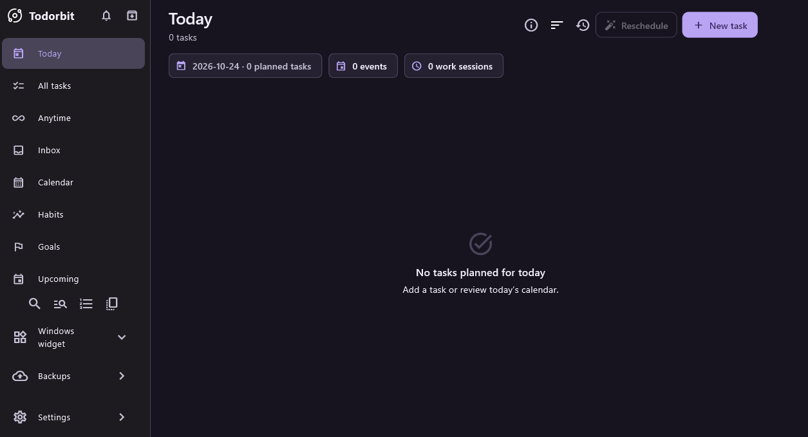

Give every task a place.
Projects, categories, subtasks, recurring tasks and saved views help you find the next thing that matters.
Your day, in your orbit.
Tasks, calendars, habits and focused work. One thoughtful Windows app, with your everyday plans stored on your own device.
Download for WindowsFree & open source · Windows x64

A place for the whole picture
Keep a deadline separate from a planned day. See fixed events alongside tasks. Record what you actually worked on.
Projects, categories, subtasks, recurring tasks and saved views help you find the next thing that matters.
Bring tasks and fixed events into the calendar. Review a rescheduling proposal before applying it.
Track habits and goals, use focus timers and work sessions, and look back through reports.
A native Windows desktop widget keeps quick actions nearby. Customize light and dark themes, colors and hotkey presets.
Your plans are personal
Todorbit works offline. Your planner lives in a local SQLite database, with local snapshots and a reviewed restore flow.
Read the privacy policyReviewed database replacement preserves a Before Restore snapshot. Export a verified backup before moving a portable copy to a different location.
Export or selectively import supported personalization as JSON, without replacing your tasks and events.
A calmer place to start
Windows x64 · v1.0.13 pre-release
Free under the MIT license.
Packages are unsigned. Review the release notes and compare the published SHA-256 checksum before running. Windows 11 is the main test platform; Windows 10 acceptance is limited. Extract the entire portable ZIP and keep its folder together. Moving it selects a separate data profile.
Made in the open
Todorbit is created by Hussam Alkhatib. Browse the source, report a reproducible issue or get help with installation.
Keep private databases, credentials and backup passphrases out of public issues. Report security concerns by email.